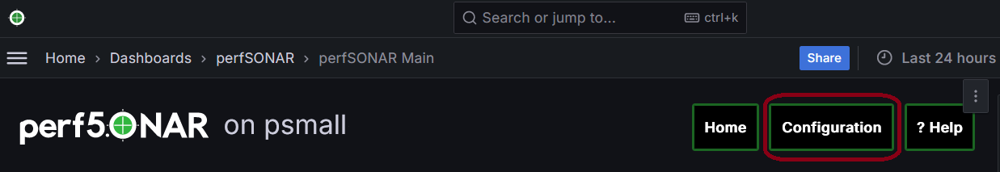
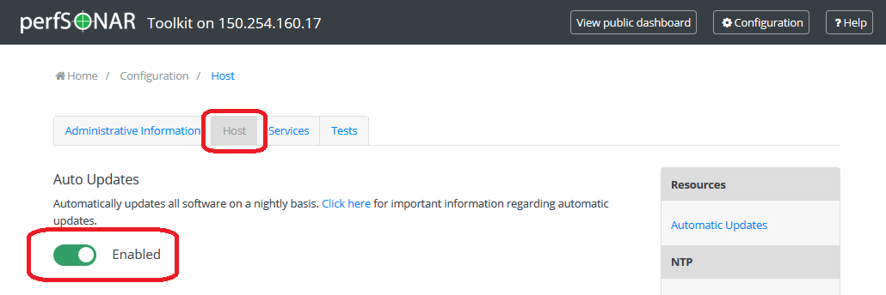

Just like any other host on your network, it is critical to stay up-to-date with the latest packages on your perfSONAR Toolkit. You will want to make sure you have the latest security fixes as well as the ability to take advantage of the great new features constantly being added to the tools. In general you will keep your host up-to-date with the operating system’s package manager (e.g. yum or apt), but in some special cases things may be more involved. Be sure to watch release notes and this page when such cases arise.
Anytime you want to manually update your host, simply run the following
CentOS:
yum update
Debian:
apt-get update
apt-get dist-upgrade
The yum package manager is used by RedHat-based operating systems like CentOS to update packages, apt-get is used by Debian-based OS. Running the command above will download the latest perfSONAR packages as well as any operating system packages available.
Note
Automatic updates are enabled by default in the perfSONAR Toolkit.
You may choose to enable automatic updates to aid in applying the latest software packages to your system. Automatic updates include all perfSONAR, operating system and third-party packages. Enabling this feature will help keep the latest security fixes on the system, but keep in mind it is possible some updates may break your host unexpectedly. The following rule of thumb from Fedora may be useful when considering whether to enable this feature:
If the machine is a critical server, for which unplanned downtime of a service on the machine can not be tolerated, then you should not use automatic updates. Otherwise, you may choose to use them.
It is also important to note that automatic updates do not perform all required system reboots or service restarts. Also, auto-updates happen nightly so there may be a period of up to 24 hours where you do not receive a patch. Enabling this feature still requires close monitoring of the host to make sure all updates are applied completely and properly.
You can manage auto updates from the command-line by enabling/disabling the yum-cron service on CentOS and configuring the unattended-upgrades option of APT on Debian and Ubuntu.
Run the following commands to enable automatic updates (must be run as a root user):
CentOS:
systemctl enable yum-cron
systemctl start yum-cron
Debian/Ubuntu:
apt-get install unattended-upgrades
/usr/lib/perfsonar/scripts/system_environment/enable_auto_updates new
Likewise, you may disable auto-updates from the command-line by running the following:
CentOS:
systemctl stop yum-cron
systemctl disable yum-cron
Debian/Ubuntu:
apt-get purge unattended-upgrades
rm -f /etc/apt/apt.conf.d/60unattended-upgrades-perfsonar
CentOS:
These commands will automatically update all packages on the system. Also note that the main configuration file for auto-updates lives at /etc/yum. See the yum-cron man page or the page here for more information on using auto-updates and advanced options like excluding packages from update. Also see Disabling Automatic Updates for perfSONAR Packages.
Debian/Ubuntu:
This configuration enables automatic updates for Debian security updates or Ubuntu security updates and perfSONAR packages.
If you are running the perfSONAR Toolkit, you may enable/disable automatic updates for all packages (not just perfSONAR) on the system from the web interface as follows:
Open your toolkit web interface in a browser.
Click on Edit (A) in the host information section of the main page or Configuration (B) button in the right-upper corner and login as the web administrator user created during installation.
See also
See Managing Users for more details on creating a web administrator account.
On the Host tab click the button under the Auto Updates heading to enable or disable auto-updates as indicated by the color and status text of the button.

Click Save to apply your changes. After a loading screen you should see a green message at the bottom indicating your changes have been saved.
The commands in the previous sections control updates for the entire system. If you want to leave automatic updates on for base system packages, but would like to just disable the perfSONAR updates you can do so by following the steps in the previous sections and editing the file /etc/yum.repos.d/perfSONAR.repo with the option enabled set to 0.
Note
If you are running against one of our testing repositories you may also need to update the files /etc/yum.repos.d/perfSONAR-staging.repo and /etc/yum.repos.d/perfSONAR-nightly.repo.
To disable the automatic updating of perfSONAR packages on Debian/Ubuntu delete the line with origin=perfSONAR pattern from /etc/apt/apt.conf.d/60unattended-upgrades-perfsonar. After that only the Debian security updates will be installed automatically.
When perfSONAR 4.0 was released in April 2017, the perfSONAR project began the deprecation of BWCTL. pScheduler supports backward compatibility with BWCTL through the use of plug-ins that will only get chosen if pScheduler cannot be detected on the remote end.
In perfSONAR 4.1, the deprecation process will continue. The following actions will be taken with respect to BWCTL support in 4.1:
Note
Debian systems do have an auto-remove function that may remove BWCTL since no packages will be dependent on it once you upgrade to 4.1. Exact behavior depends on how you have apt configured. If you find that BWCTL is removed you can run apt-get install perfsonar-bwctl-compat to restore the packages.
Below is the plan for support for releases beyond 4.1:
All of this means that your BWCTL tests will continue to function in 4.1 but you likely have only a few months of BWCTL support left. BWCTL test are usually caused by the following:
You can determine which of your tests are still using BWCTL by running the following command on a toolkit installation:
/usr/lib/perfsonar/scripts/find_bwctl_tests
This will contact the measurement archive on the local machine and return any BWCTL tests that pScheduler ran and recorded in the last day. See /usr/lib/perfsonar/scripts/find_bwctl_tests –help for information on command-line options to change the archive URL, time range fo data analyzed and other options.
See MeshConfig to pSConfig Migration Guide for information on the upgrade of the former MeshConfig component to the new pSConfig component.
perfSONAR 4.1 is NOT available for CentOS 6. If you wish to migrate an existing CentOS 6 host to CentOS 7 see the instructions at Migrating from CentOS 6 to CentOS 7. You may also choose to switch to a supported Debian platform. Security updates for CentOS 6 perfSONAR packages will be discontinued on February 15, 2019. Also see the CentOS documentation for a schedule of when CentOS 6 will no longer be a supported operating system.
Due to package dependency changes, the Debian auto-updates will not bring you 4.1 automatically. Furthermore, our repository name changed to make it clearer that we now have a single repository for all the supported distributions.
To upgrade from 4.0.x to 4.1 on Debian or Ubuntu, follow these commands:
cd /etc/apt/sources.list.d/
wget http://downloads.perfsonar.net/debian/perfsonar-release.list
apt-get update
apt-get dist-upgrade
perfSONAR 4.1 is NOT available for Debian 7 (and Debian 7 is EOL anyways). If you wish to migrate an existing Debian 7 host to Debian 8 (Jessie) or Debian 9 (Stretch) you are advised to do it with the following steps: